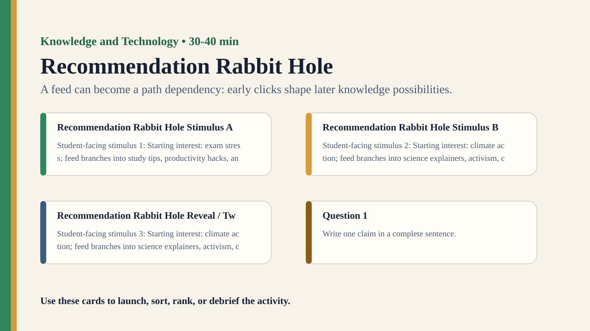

Detailed activity
Recommendation Rabbit Hole
Students simulate repeated recommendations and observe how small choices can narrow a user's knowledge environment.
Free classroom activity
Big Idea
A feed can become a path dependency: early clicks shape later knowledge possibilities.
Teacher Summary
Students model how recommendation systems can amplify interests, assumptions, and emotional content.
Use the simulation to examine how technology shapes attention and perceived consensus.
Materials
- Topic cards, engagement tokens, and recommendation rule cards.
- Path tracker showing each round of recommendations.
Ready to run
Classroom Resource Pack
Use the printable pack for concrete stimulus cards, a student recording sheet, teacher prompts, and a visual prompt image.
Visual Prompt

Student Prompt
Inspect the Recommendation Rabbit Hole stimulus. Record one first claim, the evidence you used, your confidence, and what would make you revise.
Actual Lesson Questions
| # | Question for students | Teacher cue |
|---|---|---|
| 1 | Write one claim in a complete sentence. | Teacher cue: look for a clear claim, not just a description. |
| 2 | List two pieces of evidence. | Teacher cue: students should name visible words, data, source features, method features, or contextual clues. |
| 3 | Separate observation from interpretation. | Teacher cue: this is where assumptions, framing, models, or perspective usually appear. |
| 4 | Circle one confidence level and justify it. | Teacher cue: confidence is data for the debrief, not a grade. |
| 5 | Name one piece of missing information. | Teacher cue: push for method, source, context, comparison, or definitions. |
| 6 | Answer using the activity as evidence. | Teacher cue: students should move from the classroom example to a general TOK issue. |
Concrete Stimulus Packet
Stimulus
Platform Ranking Snapshot
Three posts appear in this order: 1) sponsored revision app, 2) viral rumour about exam patterns, 3) teacher guide to retrieval practice. Engagement scores are 91, 88, and 34; reliability ratings are low, very low, and high.
Use this to ask how ranking rules shape what feels important or credible.Stimulus
Recommendation Rabbit Hole Example
Starting interest: exam stress; feed branches into study tips, productivity hacks, anxiety posts, tutoring adverts, and sleep science.
Use this as the activity-specific version of the stimulus.Stimulus
Comparison / Twist Card
Starting interest: climate action; feed branches into science explainers, activism, conspiracy claims, policy debate, and lifestyle content.
Reveal after students commit to their first judgement.Teacher Key / Reveal
The key move is not the “right answer”; it is the moment students see how a feed can become a path dependency: early clicks shape later knowledge possibilities.
Setup Notes
- Prepare enough cards that each round can narrow without becoming repetitive.
- Keep content fictional and school-safe while preserving emotional and credibility differences.
Ready-to-Use Examples
- Starting interest: exam stress; feed branches into study tips, productivity hacks, anxiety posts, tutoring adverts, and sleep science.
- Starting interest: climate action; feed branches into science explainers, activism, conspiracy claims, policy debate, and lifestyle content.
Run Resources
- Feed path tracker with rounds, clicked item, new recommendations, and perceived worldview.
- Recommendation rule cards: similar topic, stronger emotion, most engaged, highest reliability.
Procedure
- Give each student or group a starting interest card.
- Students choose one item from a small feed of mixed content.
- The algorithm adds more cards similar to the chosen card in the next round.
- Repeat for three or four rounds and map how feeds diverge.
- Debrief what users might come to believe is normal, popular, or true.
Teacher Language
- The user keeps choosing, but the menu of choices keeps changing.
- At what point does personalization become a knowledge environment?
TOK Debrief Questions
- Knowledge question: When does personalization become distortion?
- Is a recommendation a neutral convenience or an argument about relevance?
- Who is responsible for the knowledge environment created by a feed?
Knowledge Questions
- When does personalization become distortion?
- How do technological systems shape what knowers notice?
- Can visibility be mistaken for importance?
Sample Student Output
- My feed made the issue seem more extreme because each round selected stronger emotional content.
- The algorithm did not lie, but it changed what I thought was common.
Exhibition Object Idea
A feed path map showing how one early click led to a narrower information stream.
Adaptations
- Support: run two rounds only.
- Challenge: add engagement feedback so popular cards become more likely next round.
Extension Tasks
- Students design an alternative feed rule that balances curiosity, reliability, and wellbeing.
- Connect the path map to a TOK exhibition object such as a phone screen.
Teacher Notes
The key is not to demonize algorithms but to make ranking, feedback, and path dependency visible.
Ask students to separate user choice, system design, and platform incentive.